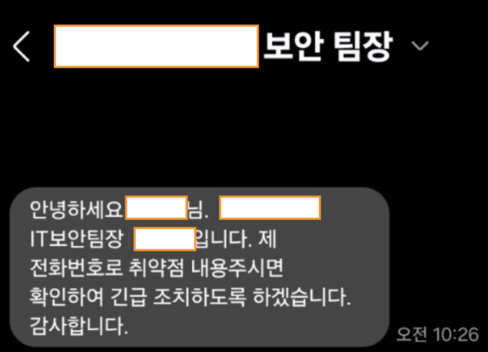

ACCESS BYPASS
대기업 금융 서비스 접근 통제 취약점 분석 및 책임 공개 사례
ACCESS BYPASS
대기업 금융 서비스 접근 통제 취약점 분석 및 책임 공개 사례
Keywords
- IDOR (Insecure Direct Object Reference)
- Access Control Bypass
- Unauthenticated Access
- Financial Data Exposure
- Responsible Disclosure
Vulnerability Overview
- Access Control Bypass
- Unauthenticated Access
- Financial Data Exposure
- Responsible Disclosure
국내 대형 금융사의 고객 상담(VOC) 시스템에서 확인된 접근 통제 우회 취약점(IDOR) 분석 사례입니다.
객체 참조값(RGST_DT, TICKET_ID) 인증 및 권한 검증 로직이 누락된 구조적 결함을 식별하였으며,
로그인하지 않아도 URL 파라미터 조작만으로 타 사용자의 상담 내역에 접근할 수 있음을 확인했습니다.
Vulnerability Impact
객체 참조값(RGST_DT, TICKET_ID) 인증 및 권한 검증 로직이 누락된 구조적 결함을 식별하였으며,
로그인하지 않아도 URL 파라미터 조작만으로 타 사용자의 상담 내역에 접근할 수 있음을 확인했습니다.
- 공격 방식: 날짜(RGST_DT) 및 티켓 번호(TICKET_ID) 파라미터 변조
- 유출 범위 : 2021.1월부터 2026.2월까지 약 5년 간의 고객 상담 및 첨부파일 조회 가능
- 노출 정보 유형 : 주민등록번호, 휴대전화 번호, 신분증 사본, 계좌 정보, 계좌 비밀번호, 신용정보조회서 등
- 비즈니스 리스크: 악의적 악용 시 보이스피싱, 명의도용 등 2차 금융 범죄로 이어질 잠재적 위험 존재
Discovery & Action
- 유출 범위 : 2021.1월부터 2026.2월까지 약 5년 간의 고객 상담 및 첨부파일 조회 가능
- 노출 정보 유형 : 주민등록번호, 휴대전화 번호, 신분증 사본, 계좌 정보, 계좌 비밀번호, 신용정보조회서 등
- 비즈니스 리스크: 악의적 악용 시 보이스피싱, 명의도용 등 2차 금융 범죄로 이어질 잠재적 위험 존재
취약점의 심각성을 인지한 즉시 개인정보 유출 파급력을 분석하고,
해당 기업의 보안팀장 및 CISO에게 직접 긴급 보고하여 즉각적인 조치가 이루어질 수 있도록 전달했습니다.
책임 공개(Responsible Disclosure) 원칙에 따라 외부 공개 없이 내부 개선을 유도했으며,
고객 데이터 보호를 위한 신속한 보안 패치가 완료되었습니다.
해당 기업의 보안팀장 및 CISO에게 직접 긴급 보고하여 즉각적인 조치가 이루어질 수 있도록 전달했습니다.
책임 공개(Responsible Disclosure) 원칙에 따라 외부 공개 없이 내부 개선을 유도했으며,
고객 데이터 보호를 위한 신속한 보안 패치가 완료되었습니다.
